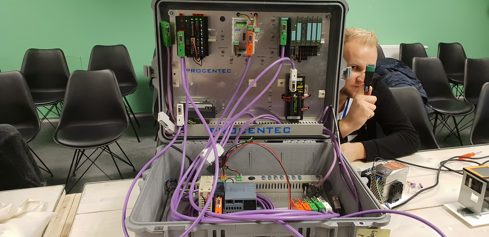

Maandag
Maandag hebben wij een algemeen deskresearch dag gehouden. Hier ging het met name over de keuze voor de router, met een vergelijkingsmatrix tussen verschillende industriële routers. Daarnaast is het beursbezoek van dinsdag doorgesproken en voorbereid. Ook is stilgestaan bij de planning en is ons scrumboard ‘opgeruimd’.
Dinsdag
Op dinsdag 13 november hebben wij een bezoek gebracht aan de PROFIdag in de Basiliek in Veenendaal. Deze beurs wordt georganiseerd door PI, het bedrijf achter Profibus en Profinet, communicatieprotocollen voor industriële automatisering. Wij hadden ons aangemeld voor drie lezingen en een workshop.
Allereerst was er de lezing De verbonden toekomst: interoperabiliteit van systemen met PLC’s, IIOT en Cloud door Benno Brinkers van Festo. Tijdens deze lezing werd er aandacht besteed aan de ontwikkeling van individuele componenten die slimmer worden, wat de basis legt voor innovatieve businessmodellen. Daar komt bij dat, hoe ‘slimmer’ de componenten, hoe groter het aandeel van software in de aansturing wordt. Dit zorgt er voor dat je de beveiliging van het concept meer zelf in handen hebt.
Aansluitend volgde de lezing Een PROFINET-applicatie ontwerpen van Bert van der Linden van ATS Applied Tech Systems. Hij doorliep de verschillen in problemen die zich voordoen bij PROFINET ten opzichte van PROFIBUS. Hierbij dook hij diep in de materie van PROFINET-switches. Er zijn dus grote verschillen tussen de eigenschappen waar een ethernet switch aan moet voldoen voor PROFINET, maar ook met name dat er per toepassing weer verschillende eigenschappen belangrijk zijn.
Hierna volgde een goed verzorgde lunch, waar wij met Henry (MSI) hebben gepraat over ons project. Na de lunch was er nog kort tijd om met bedrijven te praten. Wij hebben met Daniël van Paassen van Helmholz gesproken over toepassingen van profibus/profinet en hoe deze systemen samen kunnen werken. Ook ging het hier over toepassing van profinet-ethernet routers en IoT-gateways. Hierna zijn we nog kort naar een stand met Avans-hogeschool studenten gelopen. Zij hebben ons in het kort het TIA portal van Siemens laten zien.
Na de pauze hebben wij een workshop gevolgd over het opzetten van PROFIBUS/PROFINET systemen. Dit was een hands-on workshop waar wij zelf PROFIBUS/PROFINET kabels hebben ‘gemaakt’. Hierna werden alle kabels in een testopstelling doorgemeten en werd het systeem toegelicht.
Afsluitend hebben wij de lezing Van Smart sensor tot Cloud, transparante oplossingen voor de Smart Factory van Gerjan Woelders van Turck BV bijgewoond. Hier lag de focus op gedecentraliseerde IO-aansturing. Dit houdt in dat je met gebruik van IO-componenten de simpele PLC-taken als het uitlezen van sensoren over kan nemen. Zo kan je gedecentraliseerd je componenten uitlezen zonder dat hier een PLC aan te pas hoeft te komen. Dit scheelt veel kabels en maakt het toevoegen van (IO-Link)componenten eenvoudig.
Al met al was het een interessante beurs, zeker voor ons als ‘leken’ in de wereld van automatisering. Voor ons ging er een hele nieuwe wereld open, waarin weer veel meer gaande is dan wij van tevoren hadden verwacht.
Woensdag
Op woensdag is weer een gesprek gevoerd met Peter verschut. In dit gesprek hadden wij een aantal punten dat we sowieso wilden bespreken met peter:
Hierop werd het een en ander snel duidelijk. Innius is een (tijdelijke) oplossing puur voor visualisatie/simulatie. RC is uiteindelijk wél nodig, omdat er géén operator aanwezig zal zijn (ideale situatie). Omdat alles automatisch zal moeten verlopen, is in nood het bijv. leeg laten lopen van een extruder ene essentiële taak die op afstand uitgevoerd zal moeten kunnen worden. Daarbij is bijvoorbeeld het door een robot laten vervangen van een lege container grondstof moeilijk automatisch te programmeren. Op het punt van OPC was Peter het vrij snel eens/akkoord met dat wij dit niet opleveren. Wel wil hij hier graag een aanbeveling over krijgen.
Wat betreft TIA portal en visualisatie on-site zou Peter wel graag gaan voor een Industriële (Siemens) display. Hierover wordt nog contact gezocht met Meyad. Ook is dit een puntje om langs Denny van Hollander Techniek te spelen. Het is interessant om zijn/hun onafhankelijke mening over HMI’s en mogelijke Siemens toepassingen te weten.
Verder is besproken dat Peter ons beide graag terug zou zien met een afstudeeropdracht. Of we hier over na zouden willen denken.
Als laatste zijn data voor mogelijke presentaties/pitstops etc. doorgegeven. Het is aan ons om te achterhalen welke data voor Peter relevant zijn/waar hij wordt verwacht. Ook vroeg Peter ons om even na te denken over de mogelijkheid om af te studeren op dit project.